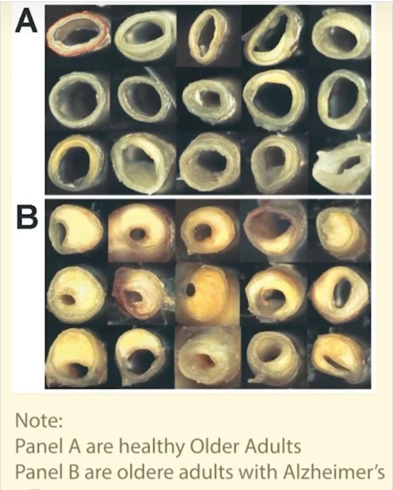

Dementia and heart disease are far more closely related than most people assume. The same processes that clog and stiffen arteries in the heart also damage the small vessels that feed the brain, and the risk factors overlap heavily. Louis Nervegna, one of the group's admins, puts it bluntly: heart health and brain health are "inextricably linked", and everything done to look after the heart and arteries also helps the brain.1 That is why dementia comes up so often in this group.
The headline number comes from the 2024 Lancet Commission on dementia prevention, intervention and care. It identified 14 modifiable risk factors that together account for about 45% of dementia cases.23 Two newly added factors were high LDL cholesterol and vision loss. Midlife high LDL and untreated midlife hearing loss are each credited with roughly 7% of cases, making them the two largest single factors.24 Walter Willett of Harvard, quoted in a post, thinks the true preventable share may be even higher, and says diet cannot eliminate dementia but can "put it off for some years".5
This article walks through what the group's posts say about how vascular health and dementia connect, what lifestyle and dietary patterns are linked to lower risk, what is known (and not yet known) about cholesterol drugs and the brain, and which of the more speculative ideas have evidence behind them. Most of the evidence discussed is observational, meaning it shows associations rather than proof of cause, and the article flags this where the posts do.
How the heart, the vessels and the brain are connected
A shared post titled "Brains and blood vessels" explains the link. Atherosclerosis (plaque build-up in arteries), endothelial dysfunction (poor function of the lining of blood vessels), high blood pressure and high LDL/apoB are consistently associated with higher risk of dementia, including Alzheimer's. Poor vessel health can reduce blood flow to the brain, disturb the blood-brain barrier (the filter between blood and brain tissue) and promote chronic inflammation and oxidative stress. Genetic analyses also show overlap between Alzheimer's risk, genetic tendencies towards higher blood lipids and coronary artery disease. The post's conclusion is that keeping apoB and blood pressure optimal, and improving endothelial function, insulin sensitivity and inflammation, protects heart and brain together.8

Heart function itself appears to matter. A Vanderbilt study of 756 adults aged 50 to 92, followed for up to 11 years, found that in carriers of the APOE4 gene variant (the strongest common genetic risk factor for late-onset Alzheimer's), lower cardiac output (how much blood the heart pumps per minute) was associated with smaller brain volumes at baseline and faster shrinkage of the temporal lobe over time. This was in people without diagnosed cardiovascular disease.1
Hearing, vision and other factors
Beyond cholesterol, the posts highlight hearing loss. Louis states that untreated midlife hearing loss is responsible for about 7% of dementia cases, tied with LDL as the largest modifiable factor, and advises that hearing loss be treated promptly to protect the brain.49 The Commission also added vision loss in later life as a modifiable risk.24

Cholesterol and the brain: clearing up the confusion
A frequent claim in online circles is that high blood cholesterol protects the brain or that lowering LDL harms it. Louis disputes this on physiological grounds. The brain makes essentially all of its own cholesterol locally, and cholesterol circulating in the blood cannot cross the blood-brain barrier.31314 On that basis he argues that PCSK9 inhibitors, ezetimibe and bempedoic acid, which only lower cholesterol in the blood, have no effect on brain cholesterol production.1314 Hydrophilic (water-soluble) statins such as rosuvastatin cross the barrier poorly, whereas lipophilic (fat-soluble) statins such as atorvastatin do enter the brain.14
His reading of the Lancet Commission is that high LDL is "the opposite" of protective: it is listed as the largest modifiable dementia risk factor, responsible for about 7% of cases.23
Do statins protect the brain?
Several posts cover the statin question, and the picture is encouraging but not final.
- Observational meta-analyses. A meta-analysis of observational studies reported statin use associated with 20% lower dementia risk (36 studies, odds ratio 0.80) and 32% lower Alzheimer's risk (21 studies, odds ratio 0.68). The authors concluded this confirms the absence of a neurocognitive risk from statins and suggests a possible benefit, but called for dedicated randomized trials.7
A later review of 55 studies covering about 7 million people found 14% lower all-cause dementia and 18% lower Alzheimer's risk; Louis points out these were cohort and case-control studies, not randomized trials.15
- Existing dementia. A Swedish registry cohort of 15,586 people with Alzheimer's or mixed dementia found statin users declined more slowly, scoring on average 0.63 points higher on the MMSE (a standard memory and thinking test) after three years. The lead author cautioned this is not evidence that people with dementia should be started on statins, but that a dementia diagnosis should not stop statin treatment in someone who needs it for blood lipids.16 Louis also notes that two earlier trials found lipophilic statins did not worsen existing Alzheimer's, though they did not clearly help either.14
- Randomized trials in progress. PREVENTABLE is randomizing about 20,000 community-dwelling adults aged 75 or older, free of cardiovascular disease and dementia, to atorvastatin 40 mg or placebo; it began in 2020, runs up to 5 years and has a primary outcome of new dementia diagnosis. Atorvastatin was chosen because it is lipophilic.12 STAREE, about 10,000 adults aged 70+ taking atorvastatin 40 mg or placebo, is complete with a primary outcome of disability-free survival (which includes freedom from dementia). Louis reasons that because it was not stopped early for harm or for overwhelming benefit, the result probably lies in between, which is an inference rather than a result.17
Show data
| Odds ratio (log scale) | 95% CI | |
|---|---|---|
| All dementia (36 studies) | 0.80 | 0.75–0.86 |
| Alzheimer's disease (21 studies) | 0.68 | 0.56–0.81 |
Ezetimibe, obicetrapib and the APOE4 question
Several posts cover other lipid drugs. A 2024 Aging Biology analysis of clinical databases (nearly 950,000 older adults) found that ezetimibe users had markedly lower rates of Alzheimer's and related dementias, reported as an 86% lower risk, and over 88% lower in high-risk people with heart disease.1819 Lab work in the same paper showed ezetimibe reducing protein aggregation in cultured neurons.19 The posts stress this is an observational association with preliminary findings that need confirmation.1819 This sits somewhat awkwardly alongside the argument that ezetimibe does not act on brain cholesterol, a tension the posts do not resolve.
Obicetrapib, a CETP inhibitor that lowers LDL and raises HDL, is a newer story. In the phase 3 BROADWAY trial it lowered LDL by 29.9% over one year, and a biomarker substudy of 1,535 participants (367 APOE4 carriers) found lower p-tau217, a blood marker of Alzheimer's pathology, with the largest effect in carriers of two APOE4 copies (20.5% lower than placebo).20 Another post reports all five biomarkers moving in the right direction (p-tau217, Abeta42/40, their ratio, GFAP and NfL), with placebo-adjusted benefits of 13.67 to 22.65%.21 The caveats are explicit: these are biomarkers, not cognitive outcomes, from a post hoc subgroup that needs replication.2021 A Mendelian randomization analysis (a genetic method that approximates a natural randomized experiment) found the CETP benefit strongest in APOE4 carriers, but Louis describes this as early and not proof of clinical benefit.22
| Drug | Reaches brain cholesterol? | What the posts report on dementia |
|---|---|---|
| Atorvastatin (lipophilic statin) | Enters the brain | Statins linked to lower dementia risk in observational studies; tested at 40 mg in PREVENTABLE and STAREE7121417 |
| Rosuvastatin (hydrophilic statin) | Crosses the barrier poorly | Not discussed separately14 |
| PCSK9 inhibitors, bempedoic acid | No effect on brain cholesterol, per Louis | No dementia data in the posts1314 |
| Ezetimibe | No effect on brain cholesterol, per Louis | 86% lower Alzheimer's and related dementia risk in a database analysis; observational1819 |
| Obicetrapib (CETP inhibitor) | Not discussed | Lower p-tau217 and other blood biomarkers in a BROADWAY substudy; no cognitive outcomes yet2021 |
Mechanistic work from Mount Sinai suggests why APOE4 may make cholesterol handling in the brain matter. In human stem-cell-derived "miBrain" tissue, APOE4 caused cholesterol to accumulate in astrocytes (support cells), impairing waste disposal and promoting toxic protein deposits. A second study found APOE4 also damages brain blood vessels through mechanisms unrelated to cholesterol. This is laboratory evidence, not a clinical result.23
Diet and lifestyle: what the evidence shows
The MIND diet
Louis describes the MIND diet (Mediterranean-DASH Intervention for Neurodegenerative Delay) as the best evidence-based nutritional approach for preventing dementia and says most neurologists now recommend it, with benefit regardless of APOE4 status.11 It combines the Mediterranean and DASH diets, emphasizing vegetables (especially leafy greens), berries, nuts, legumes, whole grains, olive oil, fish and poultry while limiting red meat, fried foods, butter, full-fat cheese, pastries and sweets.6 Willett highlights carotenoid-rich vegetables, berries and a modest amount of omega-3 from oily fish and nuts.5
Reported associations from Rush University: high adherence was linked to a 53% lower Alzheimer's risk, moderate adherence to about a third lower risk, and high adherence to cognition equivalent to someone 7.5 years younger.6 A related autopsy study of 809 people found MIND adherence associated with less hippocampal sclerosis in brain tissue.6 These are cohort studies, not randomized trials.
Among Mediterranean diet findings, Harvard cohort data (Nurses' Health Study and Health Professionals Follow-up Study) found higher Mediterranean adherence associated with lower dementia risk overall and about a 35% lower risk per one-unit score increase among people with two APOE4 copies, consistent with the PREDIMED trial but observational.24
A healthy lifestyle even when pathology is present
An observational study of 586 people examined at autopsy, with up to 24 years of lifestyle data, found that a healthy lifestyle (not smoking, at least 150 minutes a week of moderate to vigorous exercise, about one drink a day for women or two for men, regular mental stimulation and the MIND diet) was associated with less cognitive decline even in brains showing amyloid or tau. Louis notes that light to moderate alcohol was associated with protection in this study, and that the same lifestyle that protects the heart protects the brain.10
Eggs, nuts, beans and processed meat
Louis shared several cohort studies linking eggs to lower Alzheimer's risk. A Rush Memory and Aging Project analysis of 1,024 people (average age about 81, followed 6.7 years) found more than one egg per week associated with 47% lower Alzheimer's dementia risk, with dietary choline explaining about 39% of the association.2526 Louis adds that the choline in eggs (phosphatidylcholine) does not raise TMAO.2526 But a later Adventist Health Study analysis (about 40,000 people over 15 years) found nuts and beans protective to a similar degree, around 12 almonds or a third of a cup of lentils matching the egg effect, which weakens a choline-only explanation. Louis's takeaway is to swap eggs in for red and processed meat rather than for nuts or beans.27 A proposed mechanism is that choline, via phosphatidylcholine, protects mitochondrial membranes; Louis notes the older acetylcholine explanation never made much sense because dietary choline barely raises brain acetylcholine.28
On the other side, processed meat is consistently unfavorable:
- A large study linked one daily serving of processed red meat to 13% higher dementia risk and 1.6 years of accelerated cognitive aging, while replacing it with nuts, legumes or fish was associated with 20% lower risk.29
- A review in the Annual Review of Nutrition reported about two slices of deli meat daily linked to 44% higher dementia risk and 52% higher Alzheimer's risk, and replacing 10% of ultra-processed food calories with unprocessed food linked to 19% lower dementia risk.30
Strong legs and muscle
Louis called a 10-year study of 324 female twins "fascinating" because the twin design makes confounding and reverse causality less likely: greater leg power at baseline predicted slower cognitive decline and better-preserved grey matter.31
Nuances, controversies and open questions
Meat, fish and APOE4
A widely shared Swedish observational study found that carriers of APOE 3/4 or 4/4 who ate unprocessed meat or fish had lower dementia risk, with fish, poultry and red meat showing similar benefit and no benefit in non-carriers; processed meat was associated with higher risk in everyone.11 Louis stresses that intakes were modest (mean total meat 77 g/day) and that most people eating a Mediterranean or MIND-style diet probably already reach the top-fifth intake of about 2.5 oz per day of fish or poultry, if the results are even causal.1132 Hussein Yassine's commentary adds a caution: with 569 APOE 3/4 and 4/4 participants and 296 dementia cases, the study was underpowered for the dementia interaction (P = 0.10), while the cognitive trajectory interaction was significant (P = 0.004). He calls for genotype-randomized nutrition trials.33
Omega-3 and DHA
In the randomized PREVENT-E4 trial, 365 adults aged 55 to 80 who rarely ate fish (47% APOE4 carriers) took 2,000 mg DHA daily for two years. There was no difference in cognition or hippocampal volume versus placebo, though DHA reached spinal fluid equally in carriers and non-carriers. Louis notes the trial was small, primarily designed to test brain delivery, and its cognitive findings are exploratory; APOE4 carriers with the largest rise in the DHA-to-arachidonic-acid ratio did show less decline.3435 A Rutgers trial is testing plant omega-3 ALA in APOE4 carriers with mild cognitive impairment, based on the hypothesis that APOE4 impairs DHA transport into the brain.36 A post on a 2025 lipidomics study of 841 adults reported lower omega-3-rich lipids in women with Alzheimer's but not men, and cited a review of 58 randomized trials suggesting 1,000-2,500 mg/day of EPA plus DHA as the best range for cognition.37 Note the apparent tension with PREVENT-E4's null result at 2 g DHA in cognitively unimpaired older adults.
Alzheimer's is often a mixed disease
A study of autopsy data reported that "pure" Alzheimer's is rare and most dementia involves multiple pathologies, especially in APOE4 carriers, which may help explain limited benefit from anti-amyloid drugs in people with two APOE4 copies.38 Anti-amyloid antibodies (lecanemab and donanemab) slow decline by roughly 30% in early disease, but benefits are modest and limited by amyloid-related imaging abnormalities.39 Lewy body dementia, the second most common dementia, is marked by alpha-synuclein clumping and is on a spectrum with Parkinson's.40
Desmosterol testing
Louis calls the Boston Heart desmosterol blood test likely a waste of money. He argues that in healthy people higher, not lower, desmosterol is associated with dementia risk, and that statin response can be judged simply by trying a statin.41
Blood pressure, drugs and vaccines
- Blood pressure. A Chinese study shared by Dale Bredesen linked keeping blood pressure below 130/80 with 15% lower dementia risk and 16% lower overall cognitive impairment.42 An autopsy cohort found drugs that stimulate angiotensin II signaling (ARBs, thiazides, dihydropyridine calcium channel blockers) associated with 14-21% lower Alzheimer's biomarker levels, and 24% lower arteriolosclerosis with 15+ years of use, compared with those that inhibit it (ACE inhibitors, beta blockers, non-dihydropyridine calcium channel blockers).43
- Metformin. A 20+ year follow-up of the Diabetes Prevention Program found participants originally randomized to metformin had 60-62% lower odds of adjudicated dementia, but the post notes the follow-up became open-label, so it is an observational analysis of a randomized trial and not conclusive.44
- Vaccines. Louis cites accumulating evidence that the shingles vaccine protects against dementia, with randomized trials expected, and a high-dose flu vaccine study (nearly 200,000 people over 65) associated with about 55% lower Alzheimer's risk, versus 40% for standard dose. He repeatedly cautions that healthier people may simply be more likely to get vaccinated.4546
Supplements and unproven ideas
- B vitamins. In the Oxford VITACOG trial in people with mild cognitive impairment, folate, B6 and B12 cut brain shrinkage by an average of 30% over two years, up to 53% in those with high homocysteine; later analyses suggested benefit depended on high omega-3 blood levels.47 A Tufts article highlights benefit in older people with high homocysteine.48 In a UCSF study of 231 healthy older adults, lower active B12 was linked to slower processing speed and more white matter lesions even when total B12 was above the deficiency cutoff; Louis wonders if B12 explains the cognitive benefit of a multivitamin in the COSMOS trial.49
- Vitamin C. Low blood vitamin C was linked to less grey matter in over 2,000 older Japanese adults; Louis thinks it is a proxy for fruit and vegetable intake.50
- Creatine. A summary reports 20 g/day for 8 weeks improved cognition in Alzheimer's patients by nearly 5%.51
- Combined metabolic activators. A 69-person phase II trial of L-serine, nicotinamide riboside, N-acetylcysteine and L-carnitine tartrate reported 29% cognitive improvement versus 14% on placebo over almost three months, which Louis called the most impressive Alzheimer's supplement trial he had seen; a larger phase 3 is planned.52
- Lithium. A Harvard study in Nature found lithium loss in the brain is an early change in Alzheimer's and lithium orotate restored memory in mice; human trials at MGH/Brigham were expected in spring 2026. This is early evidence.5354 Louis corrected a shared post: low-dose lithium inhibits overactive mTOR in the brain.55
- Fecal transplant. A single case report of an 82-year-old man whose cognition improved after fecal microbiota transplant; one case cannot show effectiveness.56
Testing and early detection
Blood tests for p-tau217 are becoming practical. A study of 2,766 women followed up to 25 years found each standard deviation rise tripled dementia risk and the top quartile had 7 times the risk of the bottom.57 A finger-prick version could one day make screening cheaper and help people track which interventions work.58 Framingham data linked lower small dense LDL and higher fat-transport markers to lower Alzheimer's risk.59
What this means for you
- Keep apoB/LDL and blood pressure under good control; the group's framing is that arterial health protects the brain.2842
- The group's admins suggest discussing hearing and vision checks with your doctor, as untreated hearing loss is credited with about 7% of dementia cases.49
- Louis recommends a MIND or Mediterranean-style pattern, with plenty of vegetables, berries, nuts, beans and fish, and avoiding processed meat.61129
- Regular exercise (150+ minutes a week) and leg strength are linked to better cognitive aging.1031
- If a statin is otherwise indicated, current evidence shows no sign of brain harm; the group is awaiting PREVENTABLE and STAREE for the definitive answer.7121617
- Treat headline-grabbing supplement and drug findings as hypotheses until randomized trials confirm them.182144
Frequently asked questions
Does lowering LDL cholesterol harm the brain?
Louis argues it does not: blood cholesterol cannot cross the blood-brain barrier, the brain makes its own, and the Lancet Commission lists high LDL as a dementia risk factor rather than a protective one.313 Observational meta-analyses of statins found lower, not higher, dementia risk.715
Can lifestyle help if early Alzheimer's changes are already present?
An observational autopsy cohort suggests so: a healthy lifestyle was associated with less cognitive decline even with amyloid or tau present.10 The Rush data likewise link MIND adherence to less hippocampal damage.6
Should APOE4 carriers eat more meat?
Not on this evidence. The Swedish study is observational and underpowered for dementia, benefits were similar for fish and poultry, and processed meat was harmful regardless of genotype.113233
Is fish oil worth taking for the brain?
A 2 g/day DHA trial for two years found no cognitive benefit in at-risk older adults, though it was small and short.3435 Longer or differently designed trials, including one of plant ALA, are under way.36
Are vaccines protective against dementia?
Observational studies suggest shingles and high-dose flu vaccines are associated with lower dementia risk, but confounding by healthier behavior is possible.4546